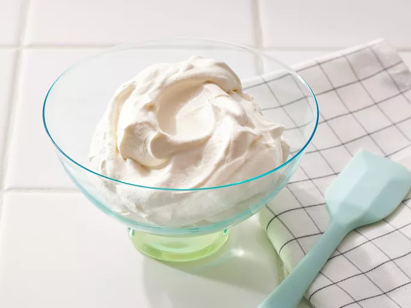

Home
Whipped Cream

Desciption
This homemade whipped cream is easy to make with just three
ingredients and it holds its shape perfectly. Lightly sweetened
and extra fluffy, this whipped cream recipe is the perfect way
to top off your favorite treats.
Ingredients
- 1 cup heavy cream
- 1 tablespoon confectioners' sugar
- 1 teaspoon vanilla extract
Steps
- Gather all ingredients.
- Beat cream in a chilled glass or metal bowl with an
electric mixer until frothy.
- Beat in confectioners' sugar and vanilla, continuing to
beat, until soft peaks form.
- Enjoy!